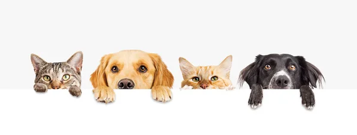

Bienvenidos a Huellitas Comunitarias
Este proyecto PAEC busca promover el respeto, el cuidado y la protección de los animales.
Nuestro propósito es crear conciencia sobre el bienestar animal y ayudar a los perritos y gatitos que necesitan alimento, atención y un hogar seguro.
Concientización animal
Todos los animales merecen respeto, cariño, alimentación, agua limpia y atención veterinaria. No debemos maltratarlos ni abandonarlos.
